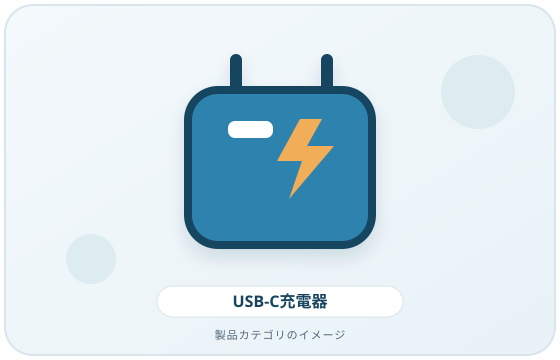
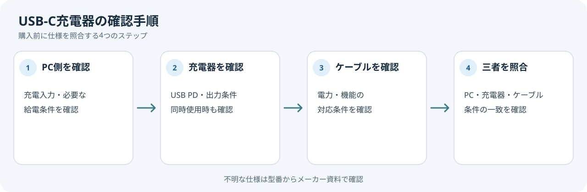

USB-C端子のある充電器なら、どのノートPCにも同じように使えるとは限りません。充電器、ケーブル、PCのそれぞれが必要なUSB Power Delivery（USB PD）条件に対応しているか確認してから選びましょう。
画像・ボタンはAmazonアソシエイトリンクです。適格購入により紹介料を得る場合があります。

Amazon.co.jpで「USB PD 充電器」を探す ↗

まずPCの仕様を確認する
PCメーカーの仕様表や取扱説明書で、次を確認します。
- USB-Cポートが充電入力に対応するか
- PCが要求する給電方式と電力
- 充電器に必要なポートや接続条件
USB-Cはコネクターの形状であり、USB PD対応を自動的に意味するものではありません。USB-IFの説明では、USB PDは機器間で給電条件を調整する仕組みです。端子形状だけで充電可否を決めないようにします。
充電器とケーブルを一緒に照合する
充電器の仕様表でUSB PDへの対応と出力条件を見ます。複数ポートを同時使用するときは、合計出力だけでなく、使うポートの組み合わせごとの出力も確認します。ケーブル側にも電力上限や機能の条件があります。PCが必要とする条件を、充電器とケーブルの両方が満たすか照合してください。
USB-IFはUSB PDの仕様がより幅広い電力条件を扱えると説明していますが、規格の最大値が個々のPCや充電器で使えることを意味するわけではありません。製品ごとの仕様を優先します。
購入前の確認メモ
- ノートPCの型番とUSB-C充電入力の条件
- 使う充電器のポートと同時接続の組み合わせ
- 充電器のポート別出力条件
- ケーブル側の給電対応条件
PC・充電器・ケーブルのいずれかで仕様が見つからないときは、製品名だけで判断せず、メーカーの仕様表またはサポートで確認してください。
こんな場合は購入前に問い合わせる
PCの型番が分からない、給電入力の記載が見当たらない、充電器のポート別出力が不明、またはケーブルの対応条件を確認できない場合は、メーカーのサポート情報で確認してから選びましょう。
まとめ
必要な電力はPC側の仕様から確認し、充電器とケーブルが同じ条件を満たすか照合します。この記事では充電器の実測や特定モデルの互換性を検証していません。
出典
- USB Charger (USB Power Delivery) — USB-IF（確認日: 2026-10-07）
- Windows の USB-C の問題を修正する — Microsoft Support（確認日: 2026-10-07）
- USB Type-C and USB 2.0 Type-C Cable and Connector Guidelines — USB-IF（確認日: 2026-10-07）